Altın Çöl
Av bölgesiT5Sv 21-25
Yaratıklar
Bir yaratığı yenince gelen EXP ve altın. Aldığın EXP ayrıca seviyene ve bonuslarına bağlıdır; oyundaki yaratık kartı senin miktarını gösterir.
| Yaratık | Seviye | Taban EXP | Altın | Düşenler |
|---|---|---|---|---|
| Çöl Akrebi | Sv 21 | 10.502 | 424 | 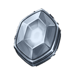 Yükseltme Taşı T4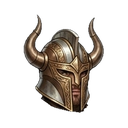 Altın Miğfer T5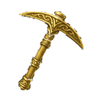 Altın Kazma T5 |
| Kum Elementali | Sv 22 | 16.200 | 654 | Yükseltme Taşı T4 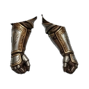 Altın Eldiven T5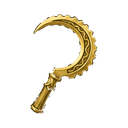 Altın Orak T5 |
| Mumya Savaşçısı | Sv 23 | 24.515 | 991 | Yükseltme Taşı T4  Altın Çizme T5 Altın Çizme T5 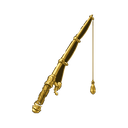 Altın Olta T5 |
| Çöl Nagası | Sv 24 | 36.637 | 1.480 | Yükseltme Taşı T4 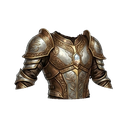 Altın Göğüslük T5 |
| Sfenks Bekçisi | Sv 25 | 60.977 | 2.464 | Yükseltme Taşı T4 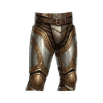 Altın Pantolon T5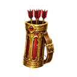 Altın Sadağı T5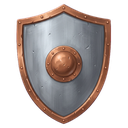 Altın Kalkan T5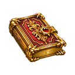 Altın Kitabı T5 Altın Asa T5 Altın Asa T5  Altın Kılıç T5 Altın Kılıç T5  Altın Topuz T5 Altın Topuz T5  Altın Yay T5 Altın Yay T5 |
Toplama
Toplama, karakter EXP'si yerine meslek EXP'si verir.